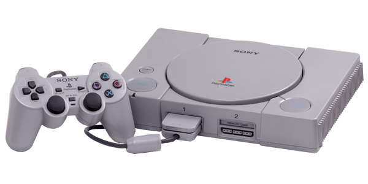

Početak Plejstešjna
"PlayStation (engl. PlayStation) je gejming konzola koju je razvila famozna Japanska firma Soni, i to početkom devedesetih godina prošlog veka. Konzola je prvo izašla na tržište u decembru 1994. godine u Japanu, zatim nekoliko meseci kasnije u USA i Evropi. Do 2006. godine prodata je u 100 miliona primeraka. Soni PlayStation je prva Sonijeva konzola, i zajedno sa N64 konzolom i Seginim Saturnom čini 5. generaciju konzola za video-igre. PlayStation (na engl. PlayStation) je sistem koji je mnogima doprineo neverovatnu (u to vreme) grafiku, mehanike igranja i izgled. Neverovatno raznovrstan i dugačak katalog 1st party Soni igara uključuje nezaboravne mega hitove poput Crash Bandicoot triologiju i spin-off-e, Spyro the Dragon triologiju, FFVII i mnoge druge video igrice."
Rane Verzije Plejstejšn Konzole
"Kompanija Nintendo pristupila je Soniju da razvije CD-ROM dodatak za igračku konzolu Super Famicom. Kodno ime konzole je bilo SNES CD. Međutim, nakon što je pročitao originalni ugovor iz 1988. Hiroši Jamauči, predsednik u to vreme, je shvatio da prava na sve objavljene igre za SNES CD ima Soni, a ne njihovu kompaniju, što je doprinelo brzom raskidanju ugovora sa Sonijem i potpisivanjem novog ugovora sa Filipsom.Kompanija Nintendo pristupila je Soniju da razvije CD-ROM dodatak za igračku konzolu Super Famicom. Kodno ime konzole je bilo SNES CD. Međutim, nakon što je pročitao originalni ugovor iz 1988. Hiroši Jamauči, predsednik u to vreme, je shvatio da prava na sve objavljene igre za SNES CD ima Soni, a ne njihove kompanije, što je doprinelo brzom raskidanju ugovora sa Sonijem i potpisivanjem novog ugovora sa Filipsom."
Istorija PS-a
"Soni preimenuje projekat u PlayStation Iks nakon raskida ugovora (engl. PlayStation-X) i nastavlja da razvija sistem kao samostalnu igračku konzolu. Advokati kompanije Nintendo su nakon ovih događaja uložili žalbu Federalnom sudu u SAD-u, u nameri da spreči prodaju Soni|jeve nove konzole. Fundament njihove tužbe je bilo to da je ime PlayStation® njihovo vlasništvo, te da je firma Soni prekršila osnove uspostavljenog ugovora. Sudija koji je predsedao ovom slučaju je odbacio tužbu i nije omogućio zabranu prodaje nove konzole koja je, kao što je prethodno bilo navedeno, konačno izdata u prodaju 3. decembra u Japanu, i to, finalno, pod nazivom PlayStation.